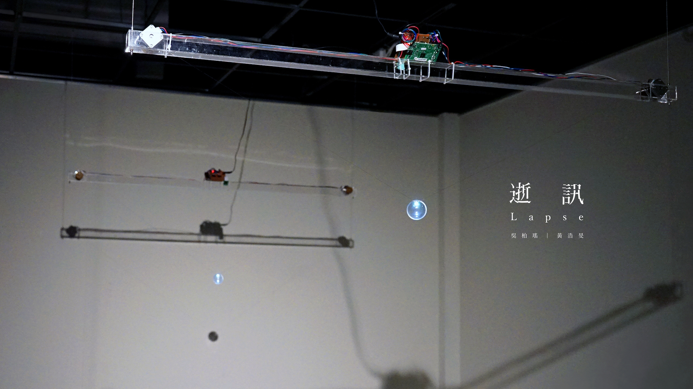
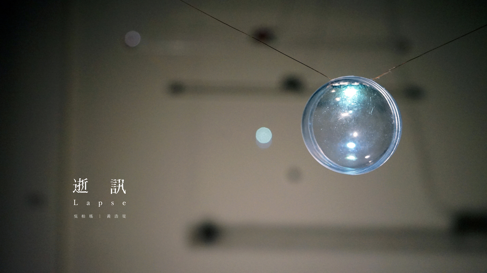

LAPSE
Installation / RaspberryPi / V-plotter
2019-Present by Wu,Po-Yao / Huang,Hao-Ming

「逝訊」為一新媒體互動作品，表現訊息因個體之間傳遞所產生的失真現象。 我們架設了兩組軟硬體相同的裝置，以樹莓派搭載相機與V型繪圖儀來模擬人類的視覺接收能力及比劃手勢的表達能力。 讓兩組裝置得以獨立接收與傳遞訊息。觀者進入場域並面對其中一台裝置比劃光軌，此裝置將用相機紀錄光軌內容並進行理解， 將連續的光軌跡做數位轉換，並用繪圖儀來比劃光軌，再現訊息內容，傳遞給對面的裝置。 而另一台裝置將用同樣地方式接收與傳遞訊息。此流程會形成迴圈，往返不盡地將光軌資訊傳遞下去。 除了裝置的溝通機制，我們也關心資訊在往返過程中產生的流失。藉由提取裝置傳輸的訊息， 讓觀者得已體認到訊息於時空中累積後所產生的變化與失真。

「逝訊」，是兩組硬軟體相仿的獨立裝置。裝置用相機接收對方的光軌跡，再將接收到的軌跡做數位轉換後， 使用V型繪圖儀再現。此溝通方式將形成迴圈，無限往復地將光軌訊息傳遞下去。 觀者除了能在沈浸空間觀賞光球的動態美感，也能觀看到光軌在接與收的過程中逐漸變形， 體認資訊因傳遞產生的失真現象。

裝置主體是以樹莓派搭載相機與V型繪圖儀來模擬人類的視覺接收能力及比劃手勢的表達能力。 裝置以樹莓派作為主控端，控制相機與V型繪圖儀。訊息經過相機接收後給主控程式解析，解析完畢後， 主控將透過繪圖儀把運算結果再現，傳遞給對面的裝置做接收。

我們以「光」作為資訊傳達的媒介，讓V型繪圖儀牽引著燈泡在空間中移動。在裝置的設計與線材的處理上， 我們將通用於V型繪圖儀的橡膠皮帶置換為捲揚式的線材卷軸，並用漆包線作為線材。 讓球體在被線拉動的同時，也能透過線的導電以控制光球的明暗。 而此線更能在幽暗的環境下達到近乎完全透明的視覺效果，達到光球在場域中漂浮的夢幻感。

從左至右依序是裝置接收到的光軌訊息以及Gcode編碼。經過兩台裝置來回數次的傳輸後， 我們可以看見資訊的流逝。整體曲線開始扭曲變形，而在細節上更多了抖動的雜訊。 體現資訊因傳遞造成失真的現象。